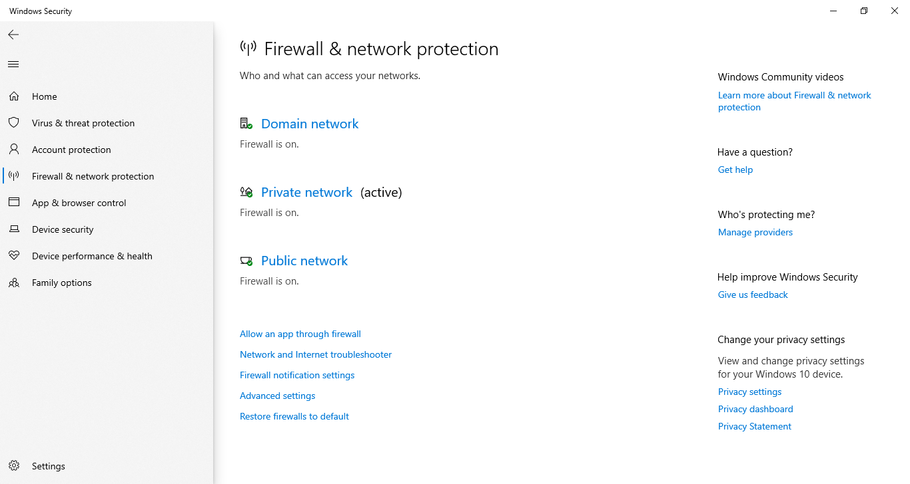
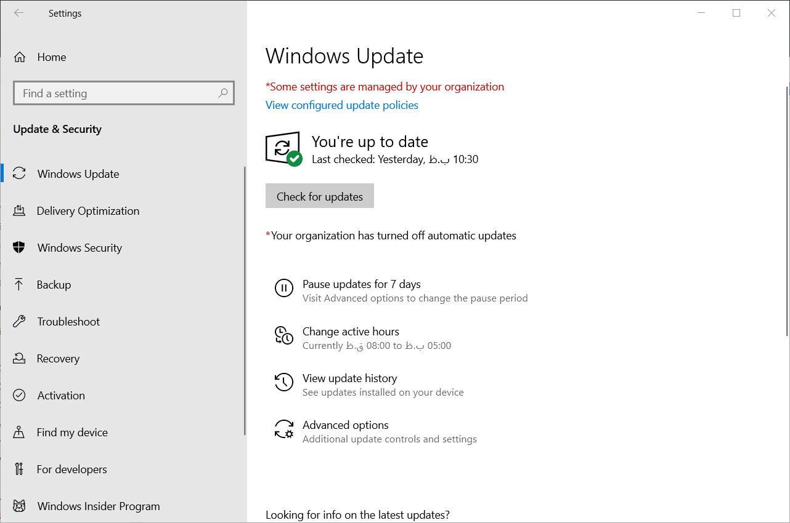

System Security Review and Security Checklist
System Security Check — assessing the status of Firewall, Windows Security and Windows updates, and compiling a security checklist
01 / Mission goal
The goal of this project is to assess the baseline security status of a Windows system and prepare a usable security checklist. This review checks three main areas: whether the firewall is enabled and its settings, the status of Windows Security protections, including antivirus and threat definition updates, and whether Windows itself is up to date. The result shows how well the system is protected against common threats and which corrective actions are needed.
02 / Tools and runtime environment
Windows Security: the Windows security center for viewing the status of antivirus (Microsoft Defender), firewall, app and browser control and device security.
Windows Defender Firewall: manages inbound and outbound network rules for the Domain, Private and Public profiles.
Windows Update: the settings section for checking and installing Windows updates and viewing their history.
Helper tools: the winver command to show the Windows version, and CMD / PowerShell to confirm the status from the command line.
Runtime environment: Windows 10 or 11 with a standard user account; for some command-line commands, running the tool with Run as administrator may be necessary.
03 / Execution steps
- Opening Windows Security: from the Start menu, search for and open Windows Security. The main page shows the overall status of each section with a green icon (healthy) or yellow/red (needs action).
- Checking Virus & threat protection: we enter this section and check that Real-time protection is on, the time of the last scan and the version of the threat definitions (Security intelligence). With Check for updates we update the definitions and, if needed, run a Quick scan.
- Checking Firewall & network protection: we check the status of the Domain, Private and Public profiles and make sure all three are On. For more detail, we run wf.msc to see the Inbound and Outbound rules.
- Checking other sections: we view and note the status of App & browser control (SmartScreen), Device security (such as Secure Boot and TPM, if supported) and Account protection.
- Checking Windows Update: we open Settings → Windows Update, click Check for updates, and then review the most recently installed updates in Update history.
- Recording the Windows version: with Win + R and running winver, we record the Windows version and Build number.
- Confirming from the command line (optional): we re-check the status of the firewall and antivirus with the commands below.
- Compiling the checklist: we record the result of each item in the checklist in the next section and write a corrective action for failed items.
04 / Findings and technical analysis
| Item checked | Where checked | Observed status |
|---|---|---|
| Real-time protection | Virus & threat protection | Active |
| Threat definitions (Security intelligence) | Protection updates | Up to date |
| Firewall for the Domain / Private / Public profiles | Firewall & network protection | All three on |
| SmartScreen | App & browser control | Active |
| Windows Update | Settings → Windows Update | Up to date (You're up to date) |
| Windows version and Build | winver | Windows 10 |
- Having Real-time protection enabled is the most important line of defense against malware, but it is only effective when the threat definitions are up to date.
- The firewall should be on for all three profiles; having the Public profile off on public networks (cafés, airports) creates greater risk.
- In addition to new features, Windows updates fix known security vulnerabilities; a long delay in installing them increases the attack surface.
- If a third-party antivirus is installed, Windows may show Microsoft Defender as disabled; in that case, the status of that antivirus must be checked.
- Windows Security only shows the baseline status and is not a substitute for user security behavior (a strong password, caution with downloads and email).
Security checklist
| Done | Checklist item | Action if failed |
|---|---|---|
| ☑ | Real-time protection is on | Enable it from Virus & threat protection settings |
| ☑ | Threat definitions are up to date | Click Check for updates in Protection updates |
| ☑ | A recent scan has been done | Run a Quick scan and, if necessary, a Full scan |
| ☑ | Firewall is on for Domain / Private / Public | Turn on the disabled profile in Firewall & network protection |
| ☑ | SmartScreen is enabled | Enable it in App & browser control |
| ☑ | Windows is up to date with no pending updates | Install updates and restart the system |
| ☑ | The Windows version is still supported | Upgrade to a supported version |
| ☑ | The user account has a strong password or PIN / Windows Hello | Set a password or PIN in Settings → Accounts → Sign-in options |
| ☑ | A backup of important data exists | Use File History or a manual copy to external storage |
05 / Visual documentation




06 / Summary and lessons learned
In this project we learned that baseline Windows security rests on three pillars: active antivirus with up-to-date definitions, the firewall on for all profiles, and regular installation of Windows updates. Windows Security gives a single view of these items, and with a few clicks the system's status can be assessed and problems fixed.
We also saw that a written checklist makes security review repeatable; it can be run periodically (for example monthly) or when handing a system over to a user. This skill applies directly to quickly assessing systems in an IT support role.